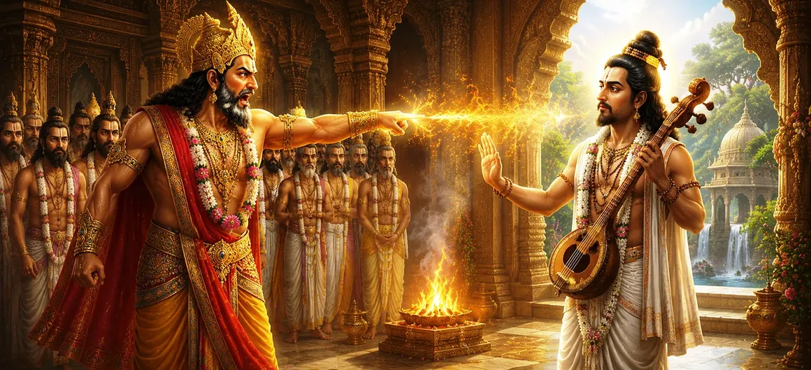

After receiving a divine boon from the Supreme Mother, Dakṣa Prajāpati became deeply focused on expanding creation and fulfilling his responsibilities as a progenitor of living beings. He desired that his descendants contribute to the growth of the worlds and continue the sacred cycle of creation. However, events soon took an unexpected turn when the celestial sage Nārada entered the lives of Dakṣa’s sons and offered them spiritual guidance that would alter their destiny forever.
This chapter presents a profound conflict between two noble paths—worldly duty and spiritual renunciation. Dakṣa viewed the continuation of creation as a sacred obligation, while Nārada encouraged seekers to pursue liberation and realize the Supreme Truth. Their differing perspectives would eventually lead to tension, misunderstanding, and a powerful curse whose effects would echo throughout the sacred narratives of the Purāṇas.
Dakṣa entrusted his sons with an important responsibility. He instructed them to participate in the expansion of creation and increase the population of the worlds. Obedient and eager to fulfill their father's command, the young sages prepared themselves for this sacred duty and set out to perform austerities before beginning their task.
While Dakṣa’s sons were engaged in contemplation and spiritual discipline, they encountered the celestial sage Nārada. Known throughout the three worlds as a messenger of divine wisdom, Nārada perceived their sincerity and recognized their spiritual potential. Rather than speaking about worldly achievements, he directed their attention toward higher truths.
Nārada advised the young men to first understand the nature of existence before immersing themselves in worldly responsibilities. He taught them that life is temporary, while the soul’s relationship with the Supreme is eternal. Inspired by his wisdom, they began to reflect deeply upon the purpose of life and the path that leads to liberation.
The teachings of Nārada transformed their understanding completely. Instead of returning to fulfill Dakṣa’s plans for worldly expansion, they chose the path of spiritual realization. Renouncing worldly ambitions, they dedicated themselves to the pursuit of the Supreme Truth. This unexpected decision would soon provoke a strong reaction from Dakṣa Prajāpati.
True wisdom begins with understanding the eternal nature of the soul.
Worldly attachments fade, but spiritual realization endures forever.
The highest goal of life is union with the Supreme Reality.
When Dakṣa learned that his sons had abandoned worldly duties and chosen the path of renunciation, he was deeply disturbed. He had hoped they would assist in the expansion of creation, yet they had departed in pursuit of spiritual liberation. To Dakṣa, this seemed like the destruction of the responsibility he had entrusted to them.
Dakṣa's sorrow gradually turned into anger. In his eyes, Nārada had diverted his sons from their sacred obligations and prevented them from fulfilling their duties toward creation. Though Nārada had acted from spiritual compassion, Dakṣa viewed his actions as interference and became determined to confront the celestial sage.
Filled with frustration and disappointment, Dakṣa approached Nārada and expressed his grievances. He accused the sage of disrupting the natural order and undermining his efforts to fulfill the Divine mandate of creation. The conversation quickly became tense, setting the stage for the dramatic curse that would soon follow.
This episode highlights a profound truth: the same event can appear differently depending on one’s perspective. Dakṣa saw duty toward creation as supreme, while Nārada emphasized liberation and spiritual realization. The Shiva Purana teaches that both paths have value, yet conflict arises when attachment and misunderstanding overshadow wisdom.
Unable to control his anger, Dakṣa finally pronounced a curse upon Nārada. He declared that the celestial sage would never remain in one place for long and would be destined to wander continuously throughout the worlds. Dakṣa believed that this would prevent Nārada from influencing others in the same manner as he had influenced his sons.
Remarkably, Nārada did not respond with anger or resentment. He accepted the curse with serenity, recognizing that all events unfold according to Divine will. Rather than viewing the curse as a punishment, he understood that it could serve a greater purpose in the cosmic order.
What Dakṣa intended as a punishment ultimately became a blessing. Because Nārada would wander endlessly through the worlds, he gained countless opportunities to spread spiritual wisdom, guide seekers, and glorify the Supreme Lord. His travels would make him one of the most influential sages in sacred history.
With the curse pronounced and accepted, the story moves forward into the next phase of the Divine plan. The destinies of Dakṣa, Nārada, and the Divine Mother continue to unfold, each contributing in unexpected ways to the sacred events that will shape the future of Sati Khanda.
"A saint sees Divine opportunity where others see misfortune. What was spoken as a curse became a blessing, for the will of the Supreme transforms every obstacle into a path toward higher wisdom."
The curse of Dakṣa and the wandering mission of Nārada have now become part of the Divine plan. As destiny continues to unfold, the moment long awaited by the gods approaches. The next chapter reveals the sacred birth of Goddess Sati, the Divine Mother who incarnates as Dakṣa’s daughter and prepares the way for her eternal union with Lord Shiva. :contentReference[oaicite:0]{index=0}